Tier IX Tanks
The Best Performing Tanks
Relative WR
The graph shows the tanks with the highest Relative WR. That is the average of players’ WR in a tank compared to their average WR at the tier (in all same tier tanks). Relative WR is a measure of the performance/strength of the tank.
- All the statistics are about battles fought during the update 6.5 only.
- The impact of “Stock-grind battles” is reduced based on tier-specific requirement for total battles at the end of the update. Only players with more than 0-152 (depending on the tier) battles in a tank in the end of the update are included to eliminate the impact of the first battles in the tank (with sub-100% crew / modules).
- The players need to have 10-20 battles in a tank and 20-40 battles at the tier during the update.
- Average WR is the players’s average WR in the tank
- Player WR at Tier is the average WR of the players of the tank at the tier. Since different tiers have different difficulty, it is more meaningful to compare players’ performance in the same tier tanks.
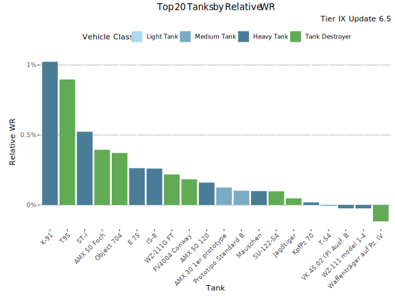
Highest Relative WR - Table
| Tank | Relative WR | Average WR | Player WR at Tier | Players | Battles/Player | Vehicle Class | Tank type |
|---|---|---|---|---|---|---|---|
| K-91 | 0.97% | 53.9% | 53% | 2 116 | 88 | Heavy Tank | Premium |
| T95 | 0.91% | 52.6% | 51.7% | 887 | 179 | Tank Destroyer | Researchable |
| ST-I | 0.54% | 50.3% | 49.8% | 1 716 | 154 | Heavy Tank | Researchable |
| AMX 50 Foch | 0.38% | 53.9% | 53.5% | 1 027 | 135 | Tank Destroyer | Researchable |
| Object 704 | 0.34% | 50.5% | 50.2% | 3 369 | 152 | Tank Destroyer | Researchable |
| IS-8 | 0.25% | 49.1% | 48.8% | 3 703 | 183 | Heavy Tank | Researchable |
| E 75 | 0.25% | 50.3% | 50% | 3 781 | 182 | Heavy Tank | Researchable |
| WZ-111G FT | 0.21% | 52.3% | 52.1% | 989 | 105 | Tank Destroyer | Researchable |
| AMX 50 120 | 0.18% | 50.1% | 49.9% | 2 103 | 136 | Heavy Tank | Researchable |
| FV4004 Conway | 0.17% | 53.7% | 53.5% | 2 078 | 124 | Tank Destroyer | Researchable |
| AMX 30 1er prototype | 0.12% | 57.4% | 57.3% | 1 444 | 82 | Medium Tank | Premium |
| SU-122-54 | 0.11% | 52.3% | 52.2% | 1 338 | 122 | Tank Destroyer | Researchable |
| Prototipo Standard B | 0.1% | 54.3% | 54.2% | 4 098 | 167 | Medium Tank | Researchable |
| Mäuschen | 0.06% | 50.1% | 50% | 986 | 110 | Heavy Tank | Researchable |
| Jagdtiger | 0.06% | 49.4% | 49.3% | 2 118 | 150 | Tank Destroyer | Researchable |
| KpfPz 70 | 0.01% | 53.5% | 53.5% | 3 889 | 76 | Heavy Tank | Premium |
| T-54 | -0.01% | 51.1% | 51.1% | 6 481 | 188 | Medium Tank | Researchable |
| VK 45.02 (P) Ausf. B | -0.02% | 50.3% | 50.4% | 1 158 | 137 | Heavy Tank | Researchable |
| WZ-111 model 1-4 | -0.03% | 51.7% | 51.7% | 688 | 103 | Heavy Tank | Researchable |
| Waffenträger auf Pz. IV | -0.12% | 52.4% | 52.5% | 10 871 | 170 | Tank Destroyer | Researchable |
Highest Average WR
This graph shows the tanks with the highest average WR at tier IX during update 6.5. Player WR denotes the tank’s players’ average WR across all the tanks during the update. Only tanks with more than 400 players are listed. This may filter out few upcoming tanks that are being tested.
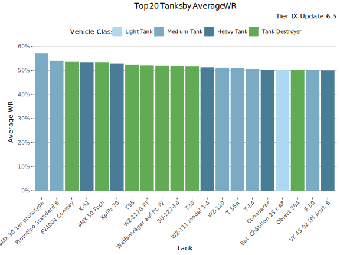
Highest Average WR - Table
Average WR denotes average WR in a tank across all the players during the update. Player WR denotes the tank’s players’ average WR across all the tanks during the update.
| Tank | Average WR | Player WR at Tier | Players | Battles/Player | Vehicle Class | Tank type |
|---|---|---|---|---|---|---|
| AMX 30 1er prototype | 57.2% | 57.1% | 1 769 | 77 | Medium Tank | Premium |
| Prototipo Standard B | 54.2% | 54.1% | 4 422 | 167 | Medium Tank | Researchable |
| FV4004 Conway | 53.7% | 53.4% | 2 316 | 121 | Tank Destroyer | Researchable |
| AMX 50 Foch | 53.7% | 53.5% | 1 115 | 132 | Tank Destroyer | Researchable |
| K-91 | 53.3% | 52.6% | 2 784 | 82 | Heavy Tank | Premium |
| KpfPz 70 | 52.9% | 53.1% | 5 528 | 67 | Heavy Tank | Premium |
| T95 | 52.4% | 51.5% | 1 101 | 165 | Tank Destroyer | Researchable |
| WZ-111G FT | 52.3% | 52% | 1 146 | 103 | Tank Destroyer | Researchable |
| Waffenträger auf Pz. IV | 52.1% | 52.2% | 13 251 | 161 | Tank Destroyer | Researchable |
| SU-122-54 | 52% | 52% | 1 536 | 117 | Tank Destroyer | Researchable |
| T30 | 51.7% | 51.9% | 3 626 | 137 | Tank Destroyer | Researchable |
| WZ-111 model 1-4 | 51.3% | 51.5% | 812 | 106 | Heavy Tank | Researchable |
| WZ-120 | 51.2% | 51.9% | 1 548 | 117 | Medium Tank | Researchable |
| T 55A | 50.7% | 51.2% | 515 | 71 | Medium Tank | Premium |
| T-54 | 50.7% | 50.6% | 9 024 | 176 | Medium Tank | Researchable |
| Conqueror | 50.4% | 50.6% | 1 573 | 145 | Heavy Tank | Researchable |
| E 50 | 50.4% | 50.7% | 2 427 | 135 | Medium Tank | Researchable |
| Object 704 | 50.3% | 50.1% | 4 400 | 148 | Tank Destroyer | Researchable |
| Bat.-Châtillon 25 t AP | 50.3% | 50.8% | 2 398 | 117 | Light Tank | Researchable |
| VK 45.02 (P) Ausf. B | 50% | 49.9% | 1 434 | 137 | Heavy Tank | Researchable |
Highest Average Damage
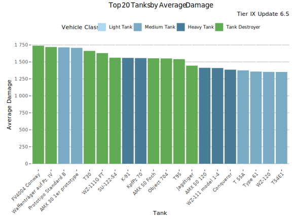
Highest Average Damage - Table
| Tank | Average Damage | Average WR | Player WR at Tier | Players | Battles/Player | Vehicle Class | Tank type |
|---|---|---|---|---|---|---|---|
| FV4004 Conway | 1 751 | 53.7% | 53.4% | 2 316 | 121 | Tank Destroyer | Researchable |
| Prototipo Standard B | 1 733 | 54.2% | 54.1% | 4 422 | 167 | Medium Tank | Researchable |
| Waffenträger auf Pz. IV | 1 724 | 52.1% | 52.2% | 13 251 | 161 | Tank Destroyer | Researchable |
| AMX 30 1er prototype | 1 715 | 57.2% | 57.1% | 1 769 | 77 | Medium Tank | Premium |
| T30 | 1 663 | 51.7% | 51.9% | 3 626 | 137 | Tank Destroyer | Researchable |
| WZ-111G FT | 1 639 | 52.3% | 52% | 1 146 | 103 | Tank Destroyer | Researchable |
| AMX 50 Foch | 1 574 | 53.7% | 53.5% | 1 115 | 132 | Tank Destroyer | Researchable |
| Object 704 | 1 571 | 50.3% | 50.1% | 4 400 | 148 | Tank Destroyer | Researchable |
| SU-122-54 | 1 567 | 52% | 52% | 1 536 | 117 | Tank Destroyer | Researchable |
| K-91 | 1 564 | 53.3% | 52.6% | 2 784 | 82 | Heavy Tank | Premium |
| KpfPz 70 | 1 558 | 52.9% | 53.1% | 5 528 | 67 | Heavy Tank | Premium |
| T95 | 1 550 | 52.4% | 51.5% | 1 101 | 165 | Tank Destroyer | Researchable |
| Jagdtiger | 1 459 | 49% | 49% | 2 860 | 144 | Tank Destroyer | Researchable |
| AMX 50 120 | 1 427 | 49.8% | 49.7% | 2 570 | 133 | Heavy Tank | Researchable |
| WZ-111 model 1-4 | 1 415 | 51.3% | 51.5% | 812 | 106 | Heavy Tank | Researchable |
| Conqueror | 1 392 | 50.4% | 50.6% | 1 573 | 145 | Heavy Tank | Researchable |
| T 55A | 1 381 | 50.7% | 51.2% | 515 | 71 | Medium Tank | Premium |
| Type 61 | 1 375 | 49.8% | 50.4% | 1 209 | 129 | Medium Tank | Researchable |
| T54E1 | 1 371 | 48.8% | 49.2% | 3 245 | 126 | Medium Tank | Researchable |
| WZ-120 | 1 363 | 51.2% | 51.9% | 1 548 | 117 | Medium Tank | Researchable |
Highest Average Kills/Battle
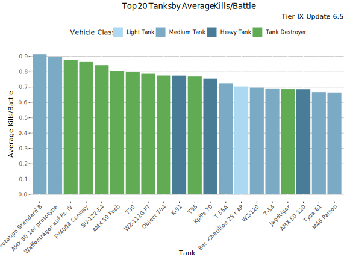
Highest Average Kills/Battle - Table
| Tank | Average Kills/Battle | Average WR | Player WR at Tier | Players | Battles/Player | Vehicle Class | Tank type |
|---|---|---|---|---|---|---|---|
| Prototipo Standard B | 0.93 | 54.2% | 54.1% | 4 422 | 167 | Medium Tank | Researchable |
| AMX 30 1er prototype | 0.91 | 57.2% | 57.1% | 1 769 | 77 | Medium Tank | Premium |
| Waffenträger auf Pz. IV | 0.88 | 52.1% | 52.2% | 13 251 | 161 | Tank Destroyer | Researchable |
| FV4004 Conway | 0.87 | 53.7% | 53.4% | 2 316 | 121 | Tank Destroyer | Researchable |
| SU-122-54 | 0.85 | 52% | 52% | 1 536 | 117 | Tank Destroyer | Researchable |
| AMX 50 Foch | 0.82 | 53.7% | 53.5% | 1 115 | 132 | Tank Destroyer | Researchable |
| T30 | 0.80 | 51.7% | 51.9% | 3 626 | 137 | Tank Destroyer | Researchable |
| WZ-111G FT | 0.79 | 52.3% | 52% | 1 146 | 103 | Tank Destroyer | Researchable |
| Object 704 | 0.79 | 50.3% | 50.1% | 4 400 | 148 | Tank Destroyer | Researchable |
| K-91 | 0.78 | 53.3% | 52.6% | 2 784 | 82 | Heavy Tank | Premium |
| T95 | 0.77 | 52.4% | 51.5% | 1 101 | 165 | Tank Destroyer | Researchable |
| KpfPz 70 | 0.76 | 52.9% | 53.1% | 5 528 | 67 | Heavy Tank | Premium |
| T 55A | 0.73 | 50.7% | 51.2% | 515 | 71 | Medium Tank | Premium |
| Bat.-Châtillon 25 t AP | 0.72 | 50.3% | 50.8% | 2 398 | 117 | Light Tank | Researchable |
| T-54 | 0.70 | 50.7% | 50.6% | 9 024 | 176 | Medium Tank | Researchable |
| WZ-120 | 0.70 | 51.2% | 51.9% | 1 548 | 117 | Medium Tank | Researchable |
| Jagdtiger | 0.70 | 49% | 49% | 2 860 | 144 | Tank Destroyer | Researchable |
| AMX 50 120 | 0.69 | 49.8% | 49.7% | 2 570 | 133 | Heavy Tank | Researchable |
| Type 61 | 0.68 | 49.8% | 50.4% | 1 209 | 129 | Medium Tank | Researchable |
| T54E1 | 0.68 | 48.8% | 49.2% | 3 245 | 126 | Medium Tank | Researchable |
Highest Spot Rate
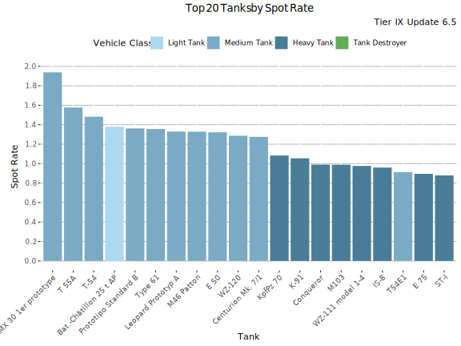
Highest Spot Rate - Table
| Tank | Spot Rate | Average WR | Player WR at Tier | Players | Battles/Player | Vehicle Class | Tank type |
|---|---|---|---|---|---|---|---|
| AMX 30 1er prototype | 1.94 | 57.2% | 57.1% | 1 769 | 77 | Medium Tank | Premium |
| T 55A | 1.58 | 50.7% | 51.2% | 515 | 71 | Medium Tank | Premium |
| T-54 | 1.48 | 50.7% | 50.6% | 9 024 | 176 | Medium Tank | Researchable |
| Bat.-Châtillon 25 t AP | 1.37 | 50.3% | 50.8% | 2 398 | 117 | Light Tank | Researchable |
| Prototipo Standard B | 1.37 | 54.2% | 54.1% | 4 422 | 167 | Medium Tank | Researchable |
| Type 61 | 1.36 | 49.8% | 50.4% | 1 209 | 129 | Medium Tank | Researchable |
| M46 Patton | 1.33 | 49.6% | 49.9% | 1 233 | 160 | Medium Tank | Researchable |
| Leopard Prototyp A | 1.33 | 47.5% | 48.4% | 3 410 | 161 | Medium Tank | Researchable |
| E 50 | 1.33 | 50.4% | 50.7% | 2 427 | 135 | Medium Tank | Researchable |
| WZ-120 | 1.29 | 51.2% | 51.9% | 1 548 | 117 | Medium Tank | Researchable |
| Centurion Mk. 7/1 | 1.27 | 49.5% | 49.9% | 1 729 | 147 | Medium Tank | Researchable |
| KpfPz 70 | 1.09 | 52.9% | 53.1% | 5 528 | 67 | Heavy Tank | Premium |
| K-91 | 1.07 | 53.3% | 52.6% | 2 784 | 82 | Heavy Tank | Premium |
| M103 | 1.00 | 48.6% | 48.9% | 2 169 | 150 | Heavy Tank | Researchable |
| Conqueror | 0.99 | 50.4% | 50.6% | 1 573 | 145 | Heavy Tank | Researchable |
| WZ-111 model 1-4 | 0.98 | 51.3% | 51.5% | 812 | 106 | Heavy Tank | Researchable |
| IS-8 | 0.98 | 48.3% | 48.2% | 6 128 | 175 | Heavy Tank | Researchable |
| T54E1 | 0.91 | 48.8% | 49.2% | 3 245 | 126 | Medium Tank | Researchable |
| E 75 | 0.90 | 49.6% | 49.5% | 5 482 | 177 | Heavy Tank | Researchable |
| VK 45.02 (P) Ausf. B | 0.88 | 50% | 49.9% | 1 434 | 137 | Heavy Tank | Researchable |
Highest Hit Rate
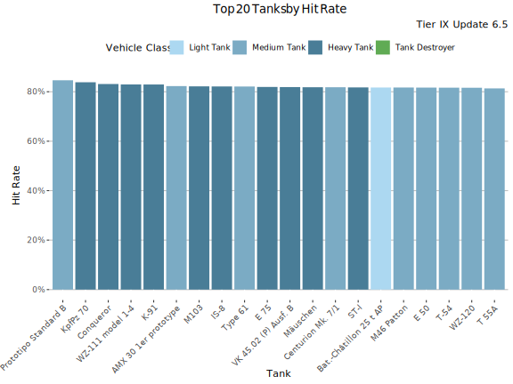
Highest Hit Rate - Table
| Tank | Hit Rate | Average WR | Player WR at Tier | Players | Battles/Player | Vehicle Class | Tank type |
|---|---|---|---|---|---|---|---|
| Prototipo Standard B | 84.7% | 54.2% | 54.1% | 4 422 | 167 | Medium Tank | Researchable |
| KpfPz 70 | 83.8% | 52.9% | 53.1% | 5 528 | 67 | Heavy Tank | Premium |
| Conqueror | 83.1% | 50.4% | 50.6% | 1 573 | 145 | Heavy Tank | Researchable |
| WZ-111 model 1-4 | 83% | 51.3% | 51.5% | 812 | 106 | Heavy Tank | Researchable |
| K-91 | 82.9% | 53.3% | 52.6% | 2 784 | 82 | Heavy Tank | Premium |
| AMX 30 1er prototype | 82.3% | 57.2% | 57.1% | 1 769 | 77 | Medium Tank | Premium |
| IS-8 | 82.3% | 48.3% | 48.2% | 6 128 | 175 | Heavy Tank | Researchable |
| M103 | 82.2% | 48.6% | 48.9% | 2 169 | 150 | Heavy Tank | Researchable |
| Type 61 | 82.1% | 49.8% | 50.4% | 1 209 | 129 | Medium Tank | Researchable |
| E 75 | 82% | 49.6% | 49.5% | 5 482 | 177 | Heavy Tank | Researchable |
| VK 45.02 (P) Ausf. B | 81.9% | 50% | 49.9% | 1 434 | 137 | Heavy Tank | Researchable |
| Mäuschen | 81.9% | 49.8% | 49.6% | 1 366 | 120 | Heavy Tank | Researchable |
| Centurion Mk. 7/1 | 81.8% | 49.5% | 49.9% | 1 729 | 147 | Medium Tank | Researchable |
| Bat.-Châtillon 25 t AP | 81.8% | 50.3% | 50.8% | 2 398 | 117 | Light Tank | Researchable |
| M46 Patton | 81.8% | 49.6% | 49.9% | 1 233 | 160 | Medium Tank | Researchable |
| E 50 | 81.7% | 50.4% | 50.7% | 2 427 | 135 | Medium Tank | Researchable |
| T-54 | 81.7% | 50.7% | 50.6% | 9 024 | 176 | Medium Tank | Researchable |
| ST-I | 81.7% | 49.7% | 49.2% | 2 389 | 153 | Heavy Tank | Researchable |
| WZ-120 | 81.6% | 51.2% | 51.9% | 1 548 | 117 | Medium Tank | Researchable |
| T 55A | 81.4% | 50.7% | 51.2% | 515 | 71 | Medium Tank | Premium |
Most Popular Tanks
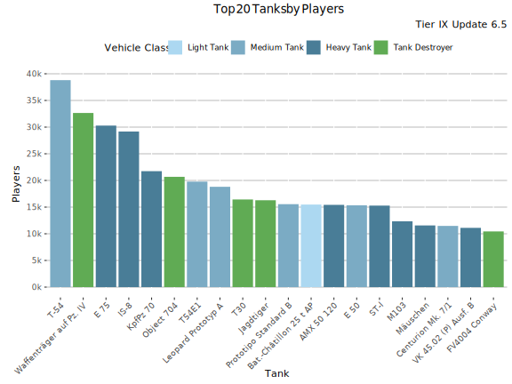
Most played Tanks
This graph shows the most played tanks by number of battles during the update 6.5.
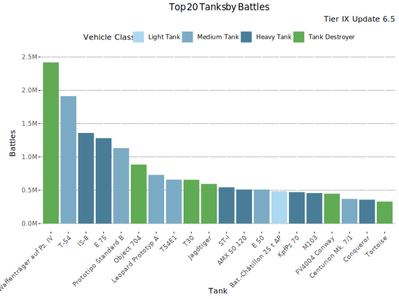
Most Played Tanks - Table
| Tank | Battles | Average WR | Player WR at Tier | Players | Battles/Player | Vehicle Class | Tank type |
|---|---|---|---|---|---|---|---|
| Waffenträger auf Pz. IV | 2.40M | 52.3% | 52.6% | 32 650 | 74 | Tank Destroyer | Researchable |
| T-54 | 1.90M | 52.4% | 51.9% | 38 802 | 49 | Medium Tank | Researchable |
| IS-8 | 1.40M | 50.1% | 49.9% | 29 172 | 47 | Heavy Tank | Researchable |
| E 75 | 1.30M | 52.2% | 51.3% | 30 284 | 42 | Heavy Tank | Researchable |
| Prototipo Standard B | 1.10M | 53.9% | 54.5% | 15 553 | 73 | Medium Tank | Researchable |
| Object 704 | 0.89M | 52.6% | 51.5% | 20 680 | 43 | Tank Destroyer | Researchable |
| Leopard Prototyp A | 0.73M | 48.8% | 50.7% | 18 810 | 39 | Medium Tank | Researchable |
| T54E1 | 0.66M | 50.5% | 51.3% | 19 781 | 33 | Medium Tank | Researchable |
| T30 | 0.66M | 54.2% | 53.6% | 16 431 | 40 | Tank Destroyer | Researchable |
| Jagdtiger | 0.60M | 51.3% | 50.9% | 16 287 | 37 | Tank Destroyer | Researchable |
| ST-I | 0.55M | 52.6% | 51.2% | 15 283 | 36 | Heavy Tank | Researchable |
| AMX 50 120 | 0.51M | 52% | 51.2% | 15 423 | 33 | Heavy Tank | Researchable |
| E 50 | 0.51M | 51.7% | 52.5% | 15 337 | 33 | Medium Tank | Researchable |
| Bat.-Châtillon 25 t AP | 0.48M | 52.6% | 52.5% | 15 479 | 31 | Light Tank | Researchable |
| KpfPz 70 | 0.47M | 54.6% | 54% | 21 737 | 22 | Heavy Tank | Premium |
| M103 | 0.46M | 52.1% | 51.1% | 12 343 | 37 | Heavy Tank | Researchable |
| FV4004 Conway | 0.45M | 55.5% | 54.5% | 10 441 | 43 | Tank Destroyer | Researchable |
| Centurion Mk. 7/1 | 0.37M | 52.2% | 52.5% | 11 477 | 32 | Medium Tank | Researchable |
| Conqueror | 0.36M | 52.9% | 52.4% | 10 289 | 35 | Heavy Tank | Researchable |
| Tortoise | 0.33M | 50.9% | 50.9% | 8 636 | 38 | Tank Destroyer | Researchable |
Lowest Performing Tanks
Lowest Relative WR
The graph shows the tanks with the lowest Relative WR. That is the average of players’ WR in a tank compared to their average WR at the tier (in all same tier tanks). Relative WR is a measure of the performance/strength of the tank.
- All the statistics are about battles fought during the update 6.5 only.
- The impact of “Stock-grind battles” is reduced based on tier-specific requirement for total battles at the end of the update. Only players with more than 0-152 (depending on the tier) battles in a tank in the end of the update are included to eliminate the impact of the first battles in the tank (with sub-100% crew / modules).
- The players need to have 10-20 battles in a tank and 20-40 battles at the tier during the update.
- Average WR is the players’s average WR in the tank
- Player WR at Tier is the average WR of the players of the tank at the tier. Since different tiers have different difficulty, it is more meaningful to compare players’ performance in the same tier tanks.

Lowest Relative WR - Table
| Tank | Relative WR | Average WR | Player WR at Tier | Players | Battles/Player | Vehicle Class | Tank type |
|---|---|---|---|---|---|---|---|
| Leopard Prototyp A | -1.07% | 47.8% | 48.9% | 2 524 | 157 | Medium Tank | Researchable |
| WZ-120 | -0.76% | 51.4% | 52.1% | 1 328 | 120 | Medium Tank | Researchable |
| Type 61 | -0.61% | 50.2% | 50.8% | 989 | 129 | Medium Tank | Researchable |
| Centurion Mk. 7/1 | -0.58% | 49.9% | 50.5% | 1 328 | 145 | Medium Tank | Researchable |
| Bat.-Châtillon 25 t AP | -0.56% | 50.5% | 51% | 1 997 | 121 | Light Tank | Researchable |
| E 50 | -0.43% | 50.6% | 51% | 2 024 | 133 | Medium Tank | Researchable |
| T54E1 | -0.34% | 49.2% | 49.5% | 2 564 | 127 | Medium Tank | Researchable |
| M103 | -0.32% | 49% | 49.4% | 1 649 | 149 | Heavy Tank | Researchable |
| Tortoise | -0.2% | 48.9% | 49.2% | 1 211 | 156 | Tank Destroyer | Researchable |
| M46 Patton | -0.2% | 50.4% | 50.6% | 958 | 157 | Medium Tank | Researchable |
| Conqueror | -0.16% | 51% | 51.2% | 1 264 | 148 | Heavy Tank | Researchable |
| T30 | -0.15% | 52% | 52.2% | 3 007 | 145 | Tank Destroyer | Researchable |
| Waffenträger auf Pz. IV | -0.12% | 52.4% | 52.5% | 10 871 | 170 | Tank Destroyer | Researchable |
| WZ-111 model 1-4 | -0.03% | 51.7% | 51.7% | 688 | 103 | Heavy Tank | Researchable |
| VK 45.02 (P) Ausf. B | -0.02% | 50.3% | 50.4% | 1 158 | 137 | Heavy Tank | Researchable |
| T-54 | -0.01% | 51.1% | 51.1% | 6 481 | 188 | Medium Tank | Researchable |
| KpfPz 70 | 0.01% | 53.5% | 53.5% | 3 889 | 76 | Heavy Tank | Premium |
| Jagdtiger | 0.06% | 49.4% | 49.3% | 2 118 | 150 | Tank Destroyer | Researchable |
| Mäuschen | 0.06% | 50.1% | 50% | 986 | 110 | Heavy Tank | Researchable |
| Prototipo Standard B | 0.1% | 54.3% | 54.2% | 4 098 | 167 | Medium Tank | Researchable |
Lowest Average WR
This graph shows the tanks with the lowest average WR at tier IX during update 6.5. Player WR denotes the tank’s players’ average WR across all the tanks during the update. Only tanks with more than 400 players are listed. This may filter out few upcoming tanks that are being tested.
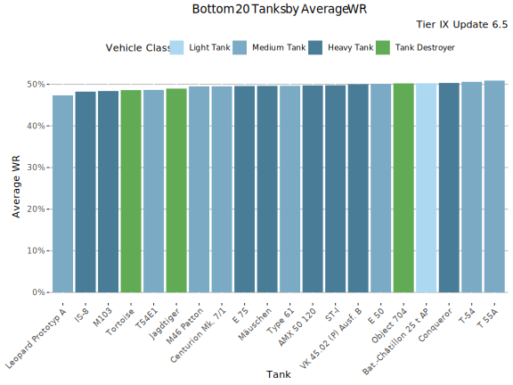
Lowest Average WR - Table
Average WR denotes average WR in a tank across all the players during the update. Player WR denotes the tank’s players’ average WR across all the tanks during the update.
| Tank | Average WR | Player WR at Tier | Players | Battles/Player | Vehicle Class | Tank type |
|---|---|---|---|---|---|---|
| Leopard Prototyp A | 47.5% | 48.4% | 3 410 | 161 | Medium Tank | Researchable |
| IS-8 | 48.3% | 48.2% | 6 128 | 175 | Heavy Tank | Researchable |
| M103 | 48.6% | 48.9% | 2 169 | 150 | Heavy Tank | Researchable |
| Tortoise | 48.6% | 48.9% | 1 464 | 154 | Tank Destroyer | Researchable |
| T54E1 | 48.8% | 49.2% | 3 245 | 126 | Medium Tank | Researchable |
| Jagdtiger | 49% | 49% | 2 860 | 144 | Tank Destroyer | Researchable |
| Centurion Mk. 7/1 | 49.5% | 49.9% | 1 729 | 147 | Medium Tank | Researchable |
| M46 Patton | 49.6% | 49.9% | 1 233 | 160 | Medium Tank | Researchable |
| E 75 | 49.6% | 49.5% | 5 482 | 177 | Heavy Tank | Researchable |
| ST-I | 49.7% | 49.2% | 2 389 | 153 | Heavy Tank | Researchable |
| Type 61 | 49.8% | 50.4% | 1 209 | 129 | Medium Tank | Researchable |
| Mäuschen | 49.8% | 49.6% | 1 366 | 120 | Heavy Tank | Researchable |
| AMX 50 120 | 49.8% | 49.7% | 2 570 | 133 | Heavy Tank | Researchable |
| VK 45.02 (P) Ausf. B | 50% | 49.9% | 1 434 | 137 | Heavy Tank | Researchable |
| Bat.-Châtillon 25 t AP | 50.3% | 50.8% | 2 398 | 117 | Light Tank | Researchable |
| Object 704 | 50.3% | 50.1% | 4 400 | 148 | Tank Destroyer | Researchable |
| E 50 | 50.4% | 50.7% | 2 427 | 135 | Medium Tank | Researchable |
| Conqueror | 50.4% | 50.6% | 1 573 | 145 | Heavy Tank | Researchable |
| T-54 | 50.7% | 50.6% | 9 024 | 176 | Medium Tank | Researchable |
| T 55A | 50.7% | 51.2% | 515 | 71 | Medium Tank | Premium |
Lowest Average Damage
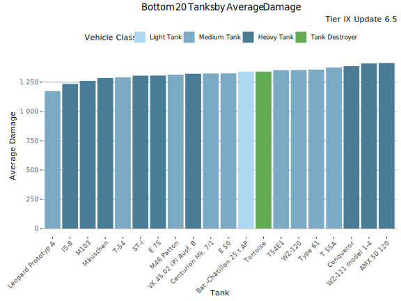
Lowest Average Damage - Table
| Tank | Average Damage | Average WR | Player WR at Tier | Players | Battles/Player | Vehicle Class | Tank type |
|---|---|---|---|---|---|---|---|
| Leopard Prototyp A | 1 191 | 47.5% | 48.4% | 3 410 | 161 | Medium Tank | Researchable |
| IS-8 | 1 251 | 48.3% | 48.2% | 6 128 | 175 | Heavy Tank | Researchable |
| M103 | 1 276 | 48.6% | 48.9% | 2 169 | 150 | Heavy Tank | Researchable |
| Mäuschen | 1 302 | 49.8% | 49.6% | 1 366 | 120 | Heavy Tank | Researchable |
| ST-I | 1 304 | 49.7% | 49.2% | 2 389 | 153 | Heavy Tank | Researchable |
| T-54 | 1 309 | 50.7% | 50.6% | 9 024 | 176 | Medium Tank | Researchable |
| E 75 | 1 318 | 49.6% | 49.5% | 5 482 | 177 | Heavy Tank | Researchable |
| VK 45.02 (P) Ausf. B | 1 324 | 50% | 49.9% | 1 434 | 137 | Heavy Tank | Researchable |
| Centurion Mk. 7/1 | 1 326 | 49.5% | 49.9% | 1 729 | 147 | Medium Tank | Researchable |
| M46 Patton | 1 327 | 49.6% | 49.9% | 1 233 | 160 | Medium Tank | Researchable |
| E 50 | 1 349 | 50.4% | 50.7% | 2 427 | 135 | Medium Tank | Researchable |
| Tortoise | 1 352 | 48.6% | 48.9% | 1 464 | 154 | Tank Destroyer | Researchable |
| Bat.-Châtillon 25 t AP | 1 356 | 50.3% | 50.8% | 2 398 | 117 | Light Tank | Researchable |
| WZ-120 | 1 363 | 51.2% | 51.9% | 1 548 | 117 | Medium Tank | Researchable |
| T54E1 | 1 371 | 48.8% | 49.2% | 3 245 | 126 | Medium Tank | Researchable |
| Type 61 | 1 375 | 49.8% | 50.4% | 1 209 | 129 | Medium Tank | Researchable |
| T 55A | 1 381 | 50.7% | 51.2% | 515 | 71 | Medium Tank | Premium |
| Conqueror | 1 392 | 50.4% | 50.6% | 1 573 | 145 | Heavy Tank | Researchable |
| WZ-111 model 1-4 | 1 415 | 51.3% | 51.5% | 812 | 106 | Heavy Tank | Researchable |
| AMX 50 120 | 1 427 | 49.8% | 49.7% | 2 570 | 133 | Heavy Tank | Researchable |
Lowest Average Kills/Battle
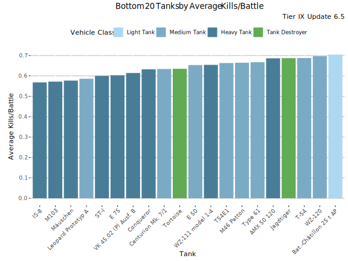
Lowest Average Kills/Battle - Table
| Tank | Average Kills/Battle | Average WR | Player WR at Tier | Players | Battles/Player | Vehicle Class | Tank type |
|---|---|---|---|---|---|---|---|
| IS-8 | 0.58 | 48.3% | 48.2% | 6 128 | 175 | Heavy Tank | Researchable |
| M103 | 0.58 | 48.6% | 48.9% | 2 169 | 150 | Heavy Tank | Researchable |
| Mäuschen | 0.59 | 49.8% | 49.6% | 1 366 | 120 | Heavy Tank | Researchable |
| Leopard Prototyp A | 0.60 | 47.5% | 48.4% | 3 410 | 161 | Medium Tank | Researchable |
| ST-I | 0.60 | 49.7% | 49.2% | 2 389 | 153 | Heavy Tank | Researchable |
| E 75 | 0.61 | 49.6% | 49.5% | 5 482 | 177 | Heavy Tank | Researchable |
| VK 45.02 (P) Ausf. B | 0.62 | 50% | 49.9% | 1 434 | 137 | Heavy Tank | Researchable |
| Conqueror | 0.64 | 50.4% | 50.6% | 1 573 | 145 | Heavy Tank | Researchable |
| Centurion Mk. 7/1 | 0.64 | 49.5% | 49.9% | 1 729 | 147 | Medium Tank | Researchable |
| Tortoise | 0.64 | 48.6% | 48.9% | 1 464 | 154 | Tank Destroyer | Researchable |
| WZ-111 model 1-4 | 0.66 | 51.3% | 51.5% | 812 | 106 | Heavy Tank | Researchable |
| E 50 | 0.67 | 50.4% | 50.7% | 2 427 | 135 | Medium Tank | Researchable |
| M46 Patton | 0.67 | 49.6% | 49.9% | 1 233 | 160 | Medium Tank | Researchable |
| T54E1 | 0.68 | 48.8% | 49.2% | 3 245 | 126 | Medium Tank | Researchable |
| Type 61 | 0.68 | 49.8% | 50.4% | 1 209 | 129 | Medium Tank | Researchable |
| AMX 50 120 | 0.69 | 49.8% | 49.7% | 2 570 | 133 | Heavy Tank | Researchable |
| Jagdtiger | 0.70 | 49% | 49% | 2 860 | 144 | Tank Destroyer | Researchable |
| WZ-120 | 0.70 | 51.2% | 51.9% | 1 548 | 117 | Medium Tank | Researchable |
| T-54 | 0.70 | 50.7% | 50.6% | 9 024 | 176 | Medium Tank | Researchable |
| Bat.-Châtillon 25 t AP | 0.72 | 50.3% | 50.8% | 2 398 | 117 | Light Tank | Researchable |
Lowest Spot Rate
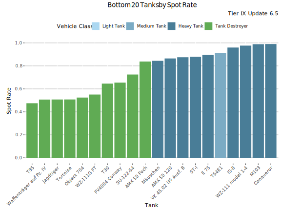
Lowest Spot Rate - Table
| Tank | Spot Rate | Average WR | Player WR at Tier | Players | Battles/Player | Vehicle Class | Tank type |
|---|---|---|---|---|---|---|---|
| T95 | 0.48 | 52.4% | 51.5% | 1 101 | 165 | Tank Destroyer | Researchable |
| Waffenträger auf Pz. IV | 0.51 | 52.1% | 52.2% | 13 251 | 161 | Tank Destroyer | Researchable |
| Jagdtiger | 0.51 | 49% | 49% | 2 860 | 144 | Tank Destroyer | Researchable |
| Tortoise | 0.51 | 48.6% | 48.9% | 1 464 | 154 | Tank Destroyer | Researchable |
| Object 704 | 0.53 | 50.3% | 50.1% | 4 400 | 148 | Tank Destroyer | Researchable |
| WZ-111G FT | 0.56 | 52.3% | 52% | 1 146 | 103 | Tank Destroyer | Researchable |
| T30 | 0.65 | 51.7% | 51.9% | 3 626 | 137 | Tank Destroyer | Researchable |
| FV4004 Conway | 0.66 | 53.7% | 53.4% | 2 316 | 121 | Tank Destroyer | Researchable |
| SU-122-54 | 0.72 | 52% | 52% | 1 536 | 117 | Tank Destroyer | Researchable |
| AMX 50 Foch | 0.85 | 53.7% | 53.5% | 1 115 | 132 | Tank Destroyer | Researchable |
| Mäuschen | 0.85 | 49.8% | 49.6% | 1 366 | 120 | Heavy Tank | Researchable |
| AMX 50 120 | 0.87 | 49.8% | 49.7% | 2 570 | 133 | Heavy Tank | Researchable |
| ST-I | 0.88 | 49.7% | 49.2% | 2 389 | 153 | Heavy Tank | Researchable |
| VK 45.02 (P) Ausf. B | 0.88 | 50% | 49.9% | 1 434 | 137 | Heavy Tank | Researchable |
| E 75 | 0.90 | 49.6% | 49.5% | 5 482 | 177 | Heavy Tank | Researchable |
| T54E1 | 0.91 | 48.8% | 49.2% | 3 245 | 126 | Medium Tank | Researchable |
| IS-8 | 0.98 | 48.3% | 48.2% | 6 128 | 175 | Heavy Tank | Researchable |
| WZ-111 model 1-4 | 0.98 | 51.3% | 51.5% | 812 | 106 | Heavy Tank | Researchable |
| Conqueror | 0.99 | 50.4% | 50.6% | 1 573 | 145 | Heavy Tank | Researchable |
| M103 | 1.00 | 48.6% | 48.9% | 2 169 | 150 | Heavy Tank | Researchable |
Lowest Hit Rate
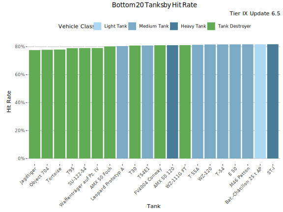
Lowest Hit Rate - Table
| Tank | Hit Rate | Average WR | Player WR at Tier | Players | Battles/Player | Vehicle Class | Tank type |
|---|---|---|---|---|---|---|---|
| Jagdtiger | 77.6% | 49% | 49% | 2 860 | 144 | Tank Destroyer | Researchable |
| Object 704 | 77.9% | 50.3% | 50.1% | 4 400 | 148 | Tank Destroyer | Researchable |
| Tortoise | 78.1% | 48.6% | 48.9% | 1 464 | 154 | Tank Destroyer | Researchable |
| T95 | 78.9% | 52.4% | 51.5% | 1 101 | 165 | Tank Destroyer | Researchable |
| SU-122-54 | 79% | 52% | 52% | 1 536 | 117 | Tank Destroyer | Researchable |
| Waffenträger auf Pz. IV | 79% | 52.1% | 52.2% | 13 251 | 161 | Tank Destroyer | Researchable |
| AMX 50 Foch | 80.3% | 53.7% | 53.5% | 1 115 | 132 | Tank Destroyer | Researchable |
| Leopard Prototyp A | 80.4% | 47.5% | 48.4% | 3 410 | 161 | Medium Tank | Researchable |
| T30 | 80.8% | 51.7% | 51.9% | 3 626 | 137 | Tank Destroyer | Researchable |
| T54E1 | 80.9% | 48.8% | 49.2% | 3 245 | 126 | Medium Tank | Researchable |
| FV4004 Conway | 81.1% | 53.7% | 53.4% | 2 316 | 121 | Tank Destroyer | Researchable |
| WZ-111G FT | 81.2% | 52.3% | 52% | 1 146 | 103 | Tank Destroyer | Researchable |
| AMX 50 120 | 81.2% | 49.8% | 49.7% | 2 570 | 133 | Heavy Tank | Researchable |
| T 55A | 81.4% | 50.7% | 51.2% | 515 | 71 | Medium Tank | Premium |
| WZ-120 | 81.6% | 51.2% | 51.9% | 1 548 | 117 | Medium Tank | Researchable |
| ST-I | 81.7% | 49.7% | 49.2% | 2 389 | 153 | Heavy Tank | Researchable |
| T-54 | 81.7% | 50.7% | 50.6% | 9 024 | 176 | Medium Tank | Researchable |
| E 50 | 81.7% | 50.4% | 50.7% | 2 427 | 135 | Medium Tank | Researchable |
| M46 Patton | 81.8% | 49.6% | 49.9% | 1 233 | 160 | Medium Tank | Researchable |
| Bat.-Châtillon 25 t AP | 81.8% | 50.3% | 50.8% | 2 398 | 117 | Light Tank | Researchable |
Least popular Tanks
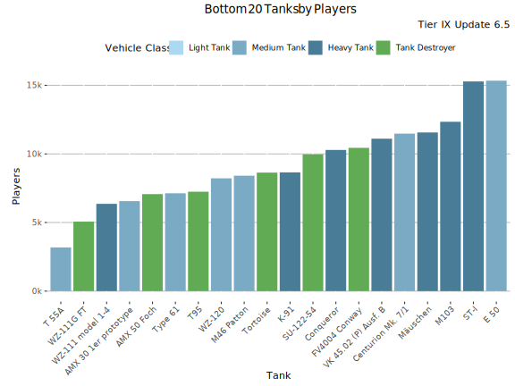
Least played Tanks
This graph shows the most played tanks by number of battles during the update 6.5.
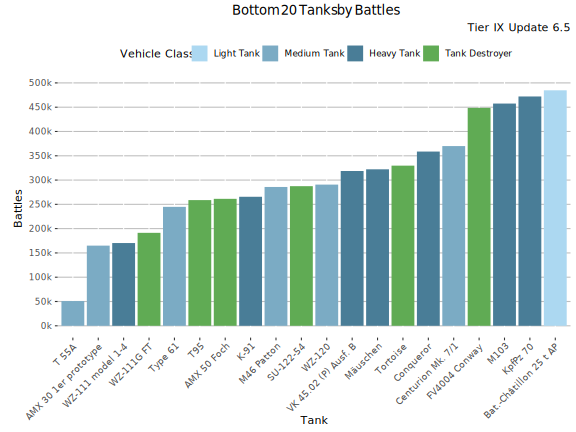
Least Played Tanks - Table
| Tank | Battles | Average WR | Player WR at Tier | Players | Battles/Player | Vehicle Class | Tank type |
|---|---|---|---|---|---|---|---|
| T 55A | 50 961 | 55.3% | 53.3% | 3 183 | 16 | Medium Tank | Premium |
| AMX 30 1er prototype | 165 043 | 57.2% | 56.9% | 6 559 | 25 | Medium Tank | Premium |
| WZ-111 model 1-4 | 170 355 | 54.9% | 53% | 6 360 | 27 | Heavy Tank | Researchable |
| WZ-111G FT | 191 368 | 55% | 53.3% | 5 063 | 38 | Tank Destroyer | Researchable |
| Type 61 | 244 838 | 51.8% | 52.3% | 7 130 | 34 | Medium Tank | Researchable |
| T95 | 258 743 | 55.5% | 52.7% | 7 245 | 36 | Tank Destroyer | Researchable |
| AMX 50 Foch | 261 353 | 56% | 54.2% | 7 069 | 37 | Tank Destroyer | Researchable |
| K-91 | 265 598 | 55.1% | 53.3% | 8 654 | 31 | Heavy Tank | Premium |
| M46 Patton | 285 780 | 52.9% | 52.6% | 8 412 | 34 | Medium Tank | Researchable |
| SU-122-54 | 287 414 | 55.4% | 53.5% | 9 968 | 29 | Tank Destroyer | Researchable |
| WZ-120 | 290 649 | 52.2% | 53% | 8 221 | 35 | Medium Tank | Researchable |
| VK 45.02 (P) Ausf. B | 318 643 | 53.6% | 52.2% | 11 110 | 29 | Heavy Tank | Researchable |
| Mäuschen | 322 119 | 51.4% | 50.9% | 11 563 | 28 | Heavy Tank | Researchable |
| Tortoise | 329 677 | 50.9% | 50.9% | 8 636 | 38 | Tank Destroyer | Researchable |
| Conqueror | 358 659 | 52.9% | 52.4% | 10 289 | 35 | Heavy Tank | Researchable |
| Centurion Mk. 7/1 | 369 964 | 52.2% | 52.5% | 11 477 | 32 | Medium Tank | Researchable |
| FV4004 Conway | 448 640 | 55.5% | 54.5% | 10 441 | 43 | Tank Destroyer | Researchable |
| M103 | 457 462 | 52.1% | 51.1% | 12 343 | 37 | Heavy Tank | Researchable |
| KpfPz 70 | 472 060 | 54.6% | 54% | 21 737 | 22 | Heavy Tank | Premium |
| Bat.-Châtillon 25 t AP | 484 747 | 52.6% | 52.5% | 15 479 | 31 | Light Tank | Researchable |
-

This work is licensed under a Creative Commons Attribution-ShareAlike 4.0 International License.
-

-

Blitzanalysiz() is a player-created website for World of Tanks: Blitz and developed in accordance with WG DPP. This site is not an official Wargaming or World of Tanks: Blitz website. World of Tanks Blitz and Wargaming are trademarks of Wargaming.net Limited. Game content and materials copyright © Wargaming.net. All rights reserved.